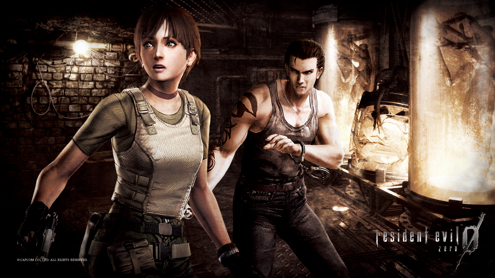
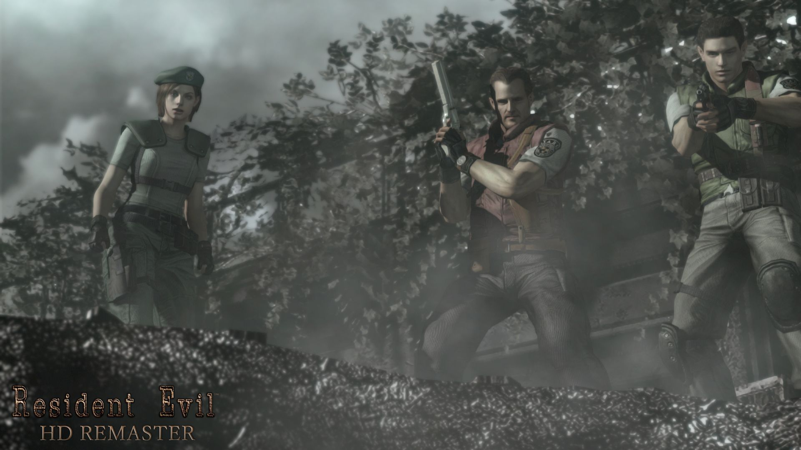
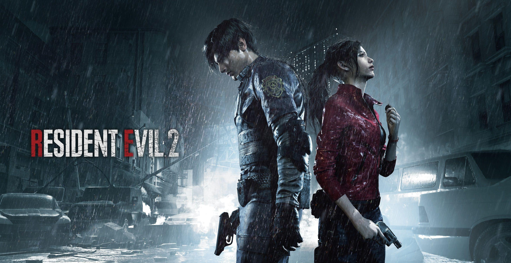
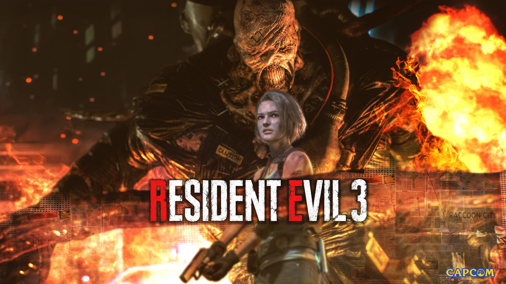
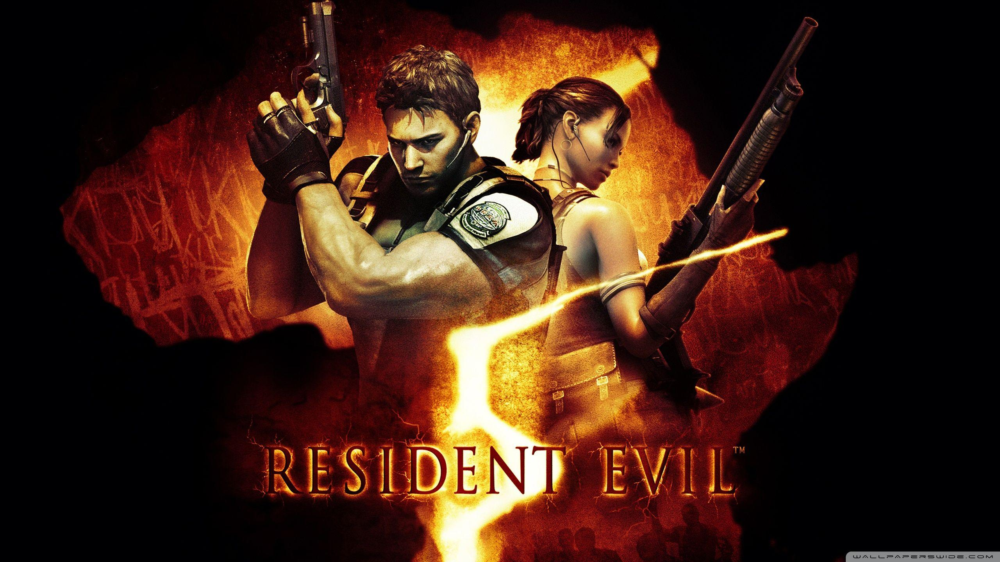
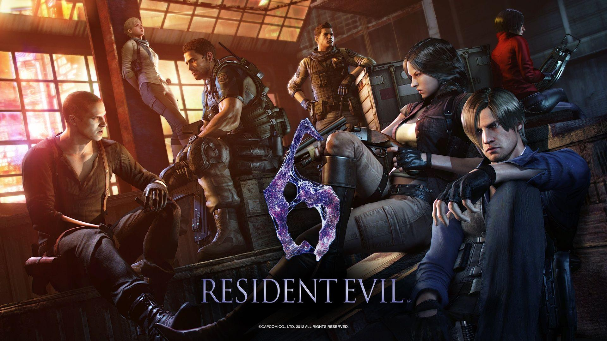
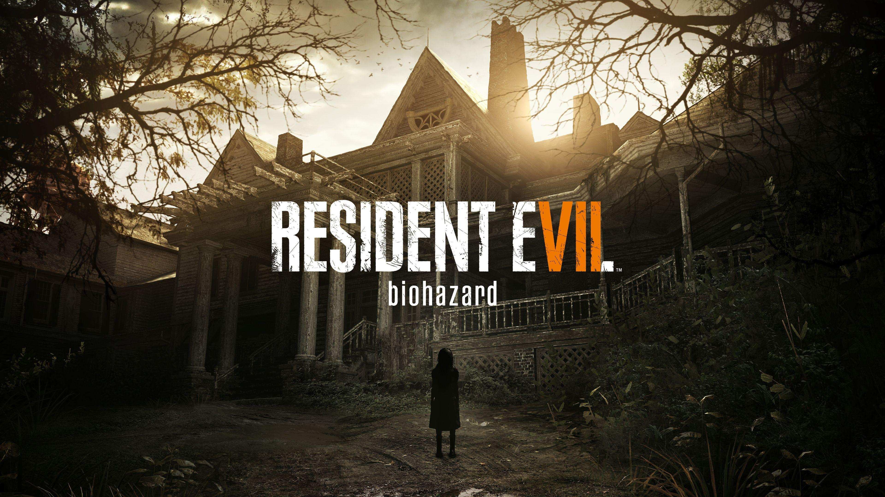
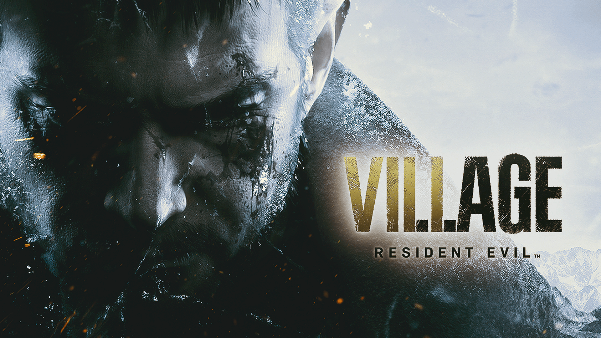
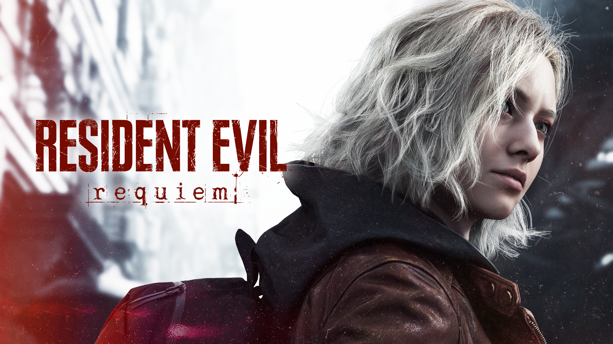

🔍 CARI INFORMASI RESIDENT EVIL SERIES DISINI :
-
RESIDENT EVIL 0

Prekuel dari tragedi Raccoon City yang menceritakan awal mula bencana biologis akibat eksperimen Umbrella Corporation. Cerita berfokus pada Rebecca Chambers, anggota termuda tim Bravo S.T.A.R.S, yang ditugaskan menyelidiki serangkaian pembunuhan misterius di pegunungan Arklay. Dalam perjalanan, ia bertemu Billy Coen, mantan marinir yang divonis mati sebagai kriminal perang. Awalnya mereka saling curiga, namun keadaan memaksa mereka bekerja sama demi bertahan hidup. Mereka menaiki Ecliptic Express, kereta mewah yang berubah menjadi neraka penuh monster akibat wabah T-Virus. Dari sana, mereka menemukan fakta mengerikan tentang Dr. James Marcus, salah satu pendiri Umbrella yang dikhianati dan bangkit kembali dengan obsesi balas dendam. Resident Evil 0 menjelaskan asal-usul virus, eksperimen lintah mutan, dan konflik internal Umbrella sebelum peristiwa game pertama terjadi. Gameplay-nya memperkenalkan sistem partner zapping, di mana pemain dapat berpindah antara Rebecca dan Billy untuk memecahkan puzzle serta bertahan hidup. Atmosfer horor klasik dipadukan dengan keterbatasan amunisi, monster grotesk, dan rasa terisolasi yang kuat. Game ini menjadi fondasi penting untuk memahami awal kehancuran Raccoon City dan kebusukan Umbrella dari dalam.
selengkapnya... -
RESIDENT EVIL 1

Resident Evil pertama dimulai ketika tim S.T.A.R.S dikirim ke kawasan Arklay Mountains untuk menyelidiki pembunuhan aneh dan hilangnya tim Bravo. Setelah diserang anjing mutan, tim Alpha berlindung di sebuah mansion besar yang ternyata menyimpan rahasia mengerikan. Mansion tersebut adalah fasilitas penelitian rahasia Umbrella Corporation yang dipenuhi zombie, makhluk biologis mutan, dan jebakan mematikan. Pemain dapat memilih antara Chris Redfield atau Jill Valentine, masing-masing dengan jalur cerita dan tantangan berbeda. Mereka harus memecahkan puzzle, mengumpulkan sumber daya terbatas, dan bertahan dari ancaman biologis sambil mengungkap konspirasi Umbrella. Salah satu pengkhianatan terbesar datang dari Albert Wesker, kapten S.T.A.R.S yang ternyata bekerja untuk Umbrella demi mendapatkan data senjata biologis. Resident Evil menjadi pelopor genre survival horror dengan kamera fixed angle, manajemen item yang ketat, dan suasana tegang yang legendaris. Mansion Spencer menjadi ikon dalam dunia game horor karena desainnya yang penuh misteri dan rasa takut konstan. Game ini juga memperkenalkan banyak karakter penting yang terus muncul di seri berikutnya.
selengkapnya... -
RESIDENT EVIL 2

Resident Evil 2 mengambil latar beberapa bulan setelah insiden mansion. Raccoon City kini jatuh total akibat penyebaran T-Virus. Kota berubah menjadi tempat penuh zombie, kehancuran, dan kepanikan massal. Cerita mengikuti Leon S. Kennedy, polisi rookie yang baru pertama masuk kerja, dan Claire Redfield, yang mencari kakaknya Chris. Keduanya bertemu di tengah kekacauan dan mencoba bertahan hidup sambil mencari jalan keluar dari kota. Mereka menjelajahi kantor polisi RPD yang penuh teka-teki dan monster mengerikan. Ancaman terbesar datang dari Tyrant atau Mr. X, senjata biologis yang terus memburu pemain tanpa henti. Selain itu ada William Birkin, ilmuwan Umbrella yang berubah menjadi monster akibat G-Virus ciptaannya sendiri. Resident Evil 2 dikenal karena atmosfer mencekam, perkembangan karakter yang kuat, dan pacing cerita yang luar biasa. Remake-nya berhasil menghidupkan kembali horor klasik dengan visual modern dan gameplay over-the-shoulder yang intens. Game ini menjadi salah satu seri Resident Evil paling dicintai sepanjang masa.
selengkapnya... -
RESIDENT EVIL 3

Resident Evil 3 berfokus pada Jill Valentine yang mencoba melarikan diri dari Raccoon City sebelum kota dihancurkan pemerintah. Namun ia diburu Nemesis, bio-weapon super cerdas yang diciptakan Umbrella untuk membunuh anggota S.T.A.R.S yang masih hidup. Tidak seperti Tyrant biasa, Nemesis dapat menggunakan senjata, berlari, dan mengejar pemain secara agresif. Sepanjang perjalanan, Jill bertemu Carlos Oliveira dari organisasi tentara bayaran U.B.C.S. Mereka bersama-sama mencoba mengungkap kebenaran dan menemukan jalan keluar dari kota yang sudah menjadi medan perang penuh zombie dan monster mutasi. Ketegangan meningkat karena Nemesis bisa muncul kapan saja, menciptakan rasa takut terus-menerus. Resident Evil 3 memperlihatkan kehancuran akhir Raccoon City sebelum akhirnya dihancurkan dengan rudal nuklir untuk menghentikan penyebaran wabah. Game ini memperkuat karakter Jill sebagai salah satu protagonis paling ikonik dalam franchise Resident Evil.
selengkapnya... -
RESIDENT EVIL 4
 Enam tahun setelah kehancuran Raccoon City, Leon S. Kennedy kini menjadi agen pemerintah Amerika Serikat. Ia dikirim ke desa terpencil di Spanyol untuk menyelamatkan Ashley Graham, putri presiden yang diculik sekte misterius bernama Los Illuminados. Namun ancaman kali ini bukan zombie biasa. Penduduk desa terinfeksi Las Plagas, parasit yang membuat mereka tetap sadar namun brutal dan fanatik. Leon menghadapi banyak musuh berbahaya termasuk Chainsaw Man, Verdugo, hingga Osmund Saddler sang pemimpin sekte. Resident Evil 4 merevolusi gameplay franchise dengan kamera over-the-shoulder yang kemudian ditiru banyak game lain. Kombinasi action dan horror dibuat sangat seimbang. Ceritanya juga memperlihatkan perkembangan Leon dari polisi rookie menjadi agen elit yang lebih dingin dan berpengalaman. Game ini dianggap sebagai salah satu video game terbaik sepanjang masa karena gameplay revolusioner, pacing luar biasa, serta desain musuh dan boss yang ikonik.
Enam tahun setelah kehancuran Raccoon City, Leon S. Kennedy kini menjadi agen pemerintah Amerika Serikat. Ia dikirim ke desa terpencil di Spanyol untuk menyelamatkan Ashley Graham, putri presiden yang diculik sekte misterius bernama Los Illuminados. Namun ancaman kali ini bukan zombie biasa. Penduduk desa terinfeksi Las Plagas, parasit yang membuat mereka tetap sadar namun brutal dan fanatik. Leon menghadapi banyak musuh berbahaya termasuk Chainsaw Man, Verdugo, hingga Osmund Saddler sang pemimpin sekte. Resident Evil 4 merevolusi gameplay franchise dengan kamera over-the-shoulder yang kemudian ditiru banyak game lain. Kombinasi action dan horror dibuat sangat seimbang. Ceritanya juga memperlihatkan perkembangan Leon dari polisi rookie menjadi agen elit yang lebih dingin dan berpengalaman. Game ini dianggap sebagai salah satu video game terbaik sepanjang masa karena gameplay revolusioner, pacing luar biasa, serta desain musuh dan boss yang ikonik.
selengkapnya... -
RESIDENT EVIL 5

Resident Evil 5 membawa Chris Redfield ke Afrika untuk menyelidiki perdagangan senjata biologis baru. Ia bekerja sama dengan Sheva Alomar dalam organisasi BSAA untuk menghentikan penyebaran virus baru yang berasal dari eksperimen Las Plagas dan Uroboros. Di sana Chris kembali bertemu Albert Wesker, musuh lamanya yang kini memiliki kekuatan super akibat eksperimen virus. Wesker berencana menciptakan dunia baru melalui seleksi biologis massal menggunakan virus Uroboros. Game ini lebih fokus pada action dan co-op dibanding horror klasik. Pemain dapat bermain bersama teman sebagai Chris dan Sheva. Walaupun atmosfer horornya berkurang, Resident Evil 5 tetap penting karena menjadi klimaks konflik panjang antara Chris dan Wesker. Pertarungan akhir melawan Wesker di gunung berapi menjadi salah satu momen paling terkenal dalam franchise Resident Evil.
selengkapnya... -
RESIDENT EVIL 6

Resident Evil 6 adalah game dengan skala terbesar dalam seri utama. Ceritanya dibagi menjadi beberapa campaign berbeda yang saling terhubung, menghadirkan karakter-karakter utama seperti Leon Kennedy, Chris Redfield, Jake Muller, dan Ada Wong. Dunia kini menghadapi ancaman bioteror global akibat virus C-Virus yang mampu menciptakan mutasi mengerikan. Leon menghadapi tragedi ketika Presiden Amerika berubah menjadi zombie, sementara Chris harus menghadapi trauma kehilangan timnya dalam misi sebelumnya. Jake Muller, anak Albert Wesker, menjadi target banyak pihak karena darahnya memiliki antibodi penting terhadap virus. Cerita game ini penuh ledakan, aksi besar, dan pertarungan epik di berbagai negara. Walaupun mendapat kritik karena terlalu fokus pada action dan meninggalkan nuansa horror klasik, Resident Evil 6 tetap menjadi salah satu game paling ambisius dalam franchise dengan skala cerita yang sangat besar.
selengkapnya... -
RESIDENT EVIL 7

Resident Evil 7 menjadi reboot atmosfer franchise dengan kembali ke akar survival horror. Cerita mengikuti Ethan Winters yang mencari istrinya, Mia, di rumah keluarga Baker di Louisiana setelah ia dinyatakan hilang selama bertahun-tahun. Rumah keluarga Baker terlihat seperti mimpi buruk penuh pembunuhan, jamur mutan, dan kegilaan. Ethan harus bertahan dari Jack Baker dan keluarganya yang brutal sambil mengungkap sumber infeksi misterius bernama Mold. Game ini menggunakan sudut pandang first-person untuk meningkatkan imersi dan rasa takut. Nuansa horornya jauh lebih personal, sempit, dan mencekam dibanding seri sebelumnya. Resident Evil 7 juga memperkenalkan Eveline, senjata biologis berbentuk anak kecil yang mampu mengendalikan pikiran manusia. Game ini berhasil menghidupkan kembali identitas horror Resident Evil setelah era action-heavy sebelumnya.
selengkapnya... -
RESIDENT EVIL 8

Resident Evil Village melanjutkan kisah Ethan Winters beberapa tahun setelah RE7. Ethan hidup bersama Mia dan putri mereka, Rosemary, sebelum hidup mereka kembali hancur akibat serangan Chris Redfield. Ethan dibawa ke desa misterius di Eropa yang dipenuhi monster, manusia serigala, dan penguasa mengerikan seperti Lady Dimitrescu, Heisenberg, Donna Beneviento, dan Mother Miranda. Setiap area memiliki nuansa horror berbeda, mulai dari kastil vampir hingga rumah boneka yang sangat menyeramkan. Cerita game ini perlahan mengungkap rahasia besar tentang asal-usul Mold dan hubungan Ethan dengan dunia biologis Resident Evil. Village memadukan action RE4 dengan horror RE7, menghasilkan pengalaman yang lebih seimbang. Ending game ini menjadi penutup emosional bagi perjalanan Ethan Winters dan membuka masa depan baru untuk Rosemary.
selengkapnya... -
RESIDENT EVIL 9

Cerita berfokus pada Grace Ashcroft, seorang analis FBI muda yang menyelidiki kasus pembunuhan misterius yang berhubungan dengan masa lalu keluarganya. Grace ternyata adalah putri Alyssa Ashcroft, karakter dari Resident Evil Outbreak. Investigasinya membawanya menuju reruntuhan Raccoon City dan Wrenwood Hotel, lokasi penuh misteri yang berkaitan dengan eksperimen biologis lama Umbrella. Selain Grace, game ini juga menghadirkan kembali Leon S. Kennedy sebagai protagonis kedua. Leon tampil lebih tua, berpengalaman, dan terlibat langsung dalam konspirasi besar yang menghubungkan era klasik Resident Evil dengan ancaman baru. Sistem dual protagonist membuat gameplay berganti antara survival horror penuh ketegangan milik Grace dan action-horror intens ala Leon. Resident Evil Requiem menggunakan RE Engine generasi terbaru dengan visual yang jauh lebih realistis. Detail wajah, pencahayaan gelap, efek darah, hingga desain monster dibuat sangat mengerikan dan imersif. Capcom juga membawa kembali nuansa eksplorasi sempit, puzzle klasik, manajemen resource, dan rasa takut konstan yang mengingatkan pemain pada era Resident Evil lama. Gameplay-nya memadukan perspektif first-person dan third-person secara dinamis. Grace lebih berfokus pada stealth, investigasi, dan bertahan hidup, sementara Leon memiliki gameplay lebih agresif namun tetap mempertahankan elemen horror. Banyak lokasi ikonik lama muncul kembali dalam kondisi hancur dan menyeramkan, terutama area-area bekas Raccoon City setelah kehancuran nuklir bertahun-tahun sebelumnya.
selengkapnya...
📋 TABEL KETERANGAN
| SERIES | KARAKTER | FINAL BOS |
|---|---|---|
| 0 | Rebecca Chambers | Queen Leech/James Marcus |
| Billy Coen | ||
| 1 | Chris Redfield | Tyrant T-002 |
| Jill Valentine | ||
| 2 | Leon S. Kennedy | Super Tyrant |
| Ada Wong | ||
| Claire Redfield | William Birkin | |
| Sherry Birkin | ||
| 3 | Jill Valentine | Nemesis |
| Carlos Oliveira | ||
| 4 | Leon S. Kennedy | Osmund Saddler |
| Ashley Graham | ||
| Ada Wong | ||
| 5 | Chris Redfield | Albert Wesker |
| Sheva Alomar | ||
| 6 | Leon S. Kennedy dan Helena Harper | Derek C. Simmons |
| Chris Redfield dan Piers Nivans | Haos | |
| Jake Muller dan Sherry Birkin | Ustanak | |
| Ada Wong dan agent | Derek C. Simmons | |
| 7 | Ethan Winters | Eveline |
| Mia Winters | ||
| Chris Redfield | Lucas baker | |
| 8 | Ethan Winters | Mother Miranda |
| Chris Redfield | ||
| 9 | Grace Ashcroft | Victor Gideon |
| Leon S. Kennedy |